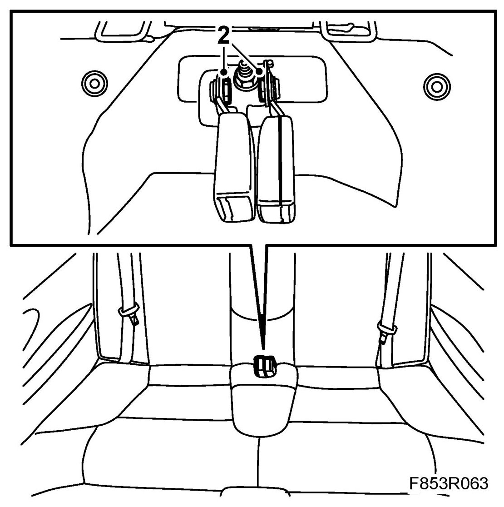
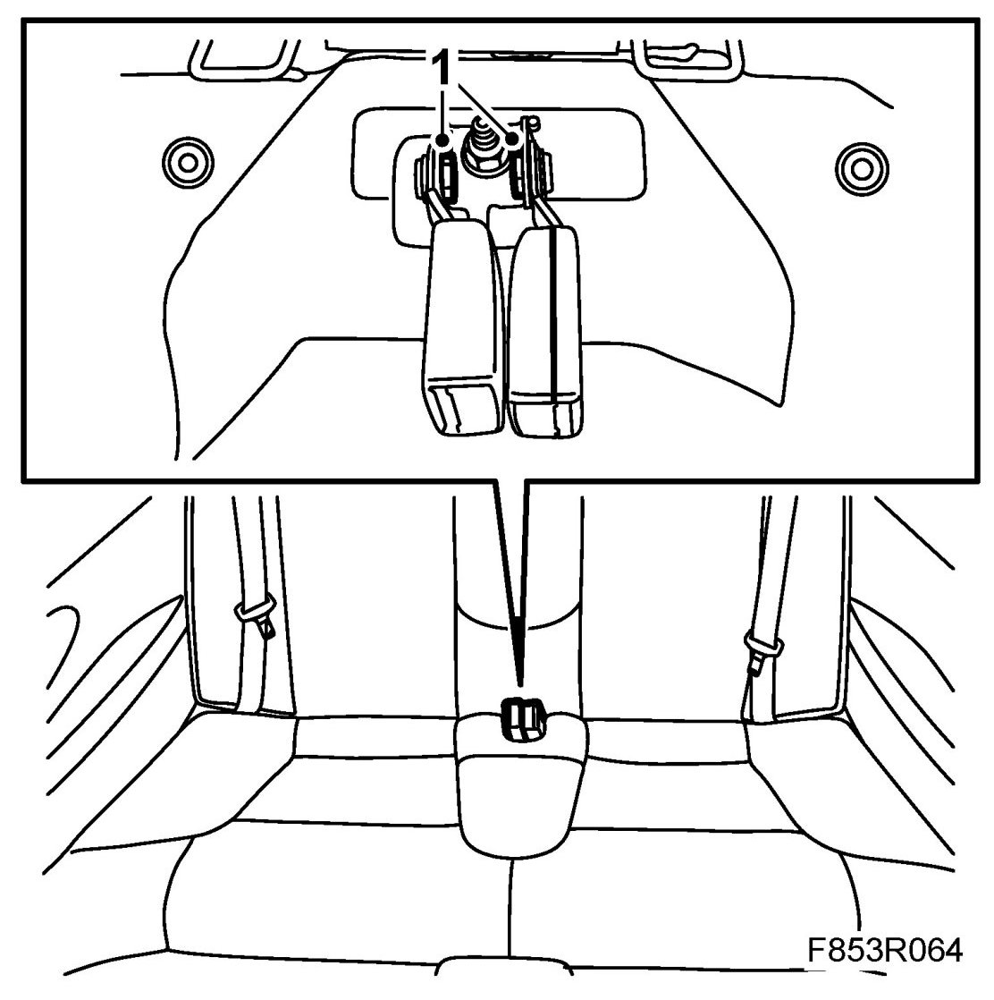

Seatbelt Buckle, Rear, CV
Seatbelt Buckle, Rear, CV
To remove
1. Remove the rear seat cushion.
2. Remove the seatbelt buckle from the console.

To fit
1. Fit the seatbelt buckle to the console.
Tightening torque 45 Nm (33 lbf ft)

2. Fit rear seat cushion.